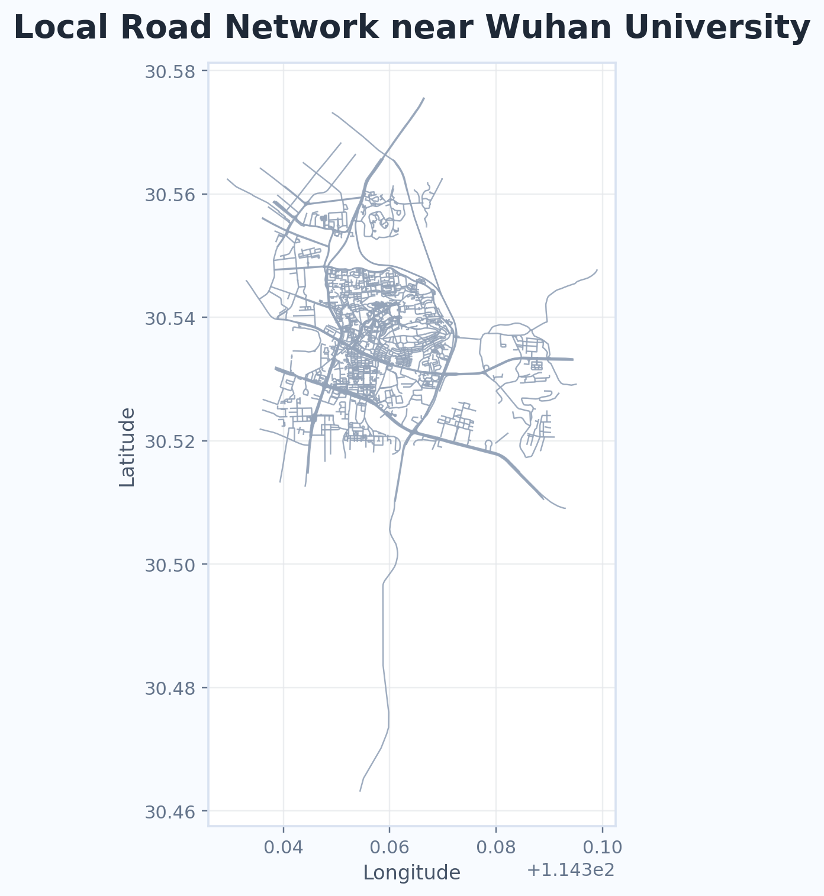
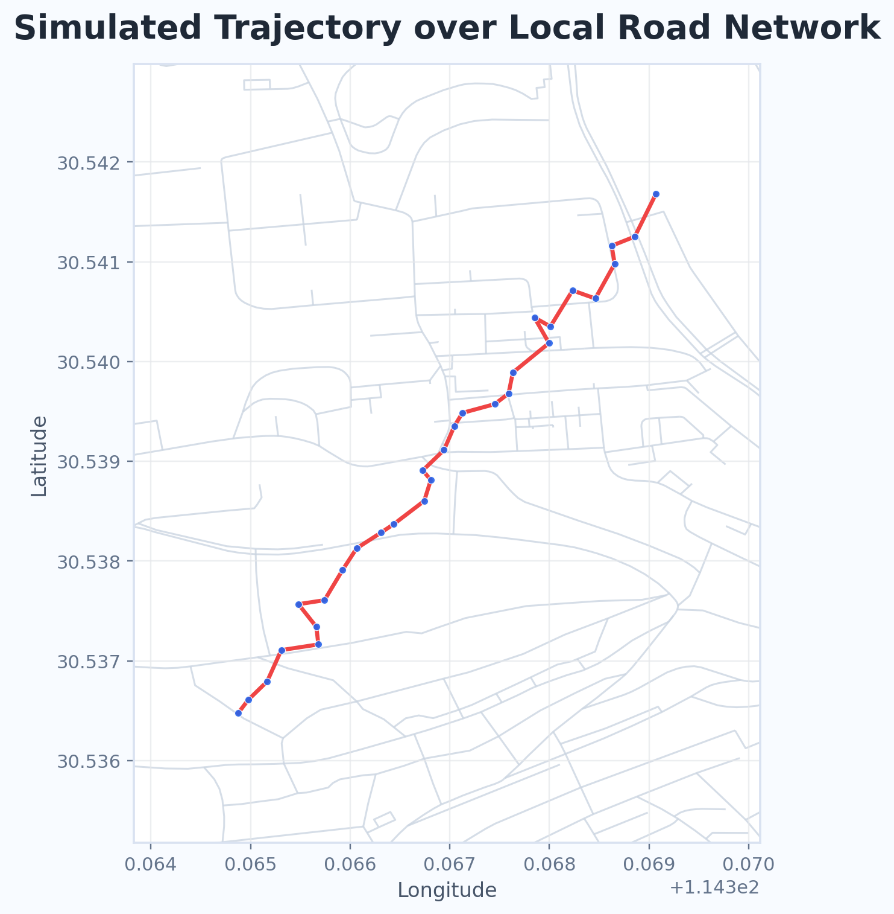
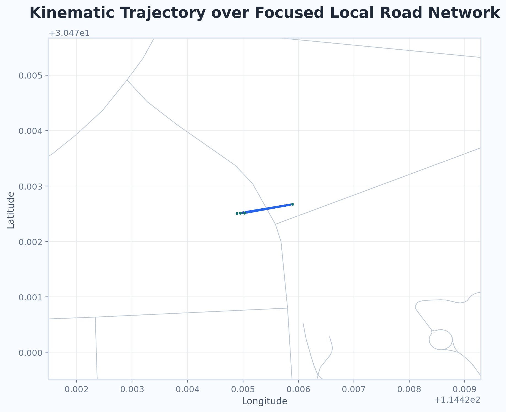
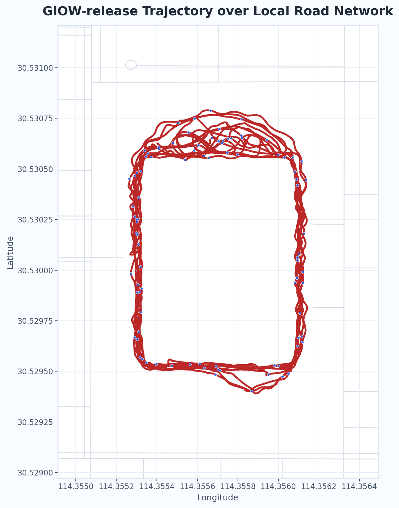

一、项目背景
地图匹配的核心任务，是将带有定位误差的轨迹点匹配到真实道路网络上，从而推断车辆或行人的实际行驶路径。在这一问题中，经典隐马尔可夫模型（Hidden Markov Model, HMM）方法具有很强的代表性。它把 GPS 观测点看作观测状态，把道路网络中的候选道路段看作隐状态，再通过发射概率描述“某个轨迹点来自某条道路的可能性”，通过转移概率描述“相邻轨迹点之间沿道路网络转移的合理性”，最后利用 Viterbi 算法在整条轨迹上寻找最优匹配路径。正因为 HMM 能够同时处理定位噪声与路径连续性，它已经成为地图匹配研究中最经典、最具基础性的技术路线之一。
这种基础性并不只体现在传统导航场景中。在今天的位置智能应用中，地图匹配仍然广泛关联于自动驾驶与高阶辅助驾驶、智能网联汽车、车路协同、物流配送路径管理、网约车轨迹校正、共享出行调度、交通流状态识别、城市时空大数据分析、外卖与即时配送定位服务、移动对象行为理解，以及面向数字孪生城市的时空轨迹治理等多个新场景。无论是自动驾驶系统中的高精定位结果约束、车辆历史轨迹回放与道路级语义理解，还是智慧交通中的出行路径还原与异常轨迹识别，其底层都离不开“如何把不完全准确的定位序列可靠地对应到真实道路网络”这一问题。从这个意义上说，HMM 不只是一个经典算法模型，也仍然是连接传统地图匹配研究与当代智能交通、自动驾驶、位置服务新应用之间的重要桥梁。
地图匹配在位置智能应用中的关联示意
在当前研究背景下，HMM 依然值得专门讨论。其原因不只是因为它“经典”，更因为它准确抓住了地图匹配问题中最关键的矛盾：一方面，轨迹观测存在噪声，单纯按最近道路匹配很容易出错；另一方面，真实行驶路径又必须满足道路拓扑约束，不能脱离路网的连通关系任意跳转。Newson 和 Krumm 的研究表明，HMM 可以在噪声与低采样率条件下，以较为统一的概率框架完成地图匹配；而 Lou 等人在低采样率轨迹研究中进一步说明，当采样间隔增大时，轨迹不确定性会明显上升，地图匹配问题也会随之变得更加困难。因此，围绕 HMM 这一基础模型展开理解、复现与改进，不仅有助于把握地图匹配的基本原理，也有助于理解后续各种改进方法到底是在解决什么问题。
从研究发展的角度看，后续许多地图匹配方法虽然形式不同，但本质上都在回应同一个问题：当轨迹噪声更大、采样率更低、道路环境更复杂时，如何在“相信观测”与“相信路网约束”之间取得更合理的平衡。也正因为如此，经典 HMM 并不是一个已经失去意义的旧方法，恰恰相反，它仍然是理解地图匹配问题、比较改进策略有效性以及分析实验结果差异的重要参照。
二、方法介绍
2.1 HMM 地图匹配的基本思想
HMM 地图匹配的核心思想，是把“带噪声的轨迹观测”与“隐藏在观测背后的真实道路路径”区分开来处理。也就是说，GPS 设备记录到的经纬度点并不直接等同于车辆真实所在的道路位置，它们只是受定位误差影响后的观测结果；而车辆真正行驶过的道路边序列，才是算法希望恢复出来的隐含状态序列。基于这种认识，HMM 将地图匹配问题表述为一个典型的“由观测推断隐藏状态”的序列决策问题，从而能够在整条轨迹层面而不是单个点层面进行路径判断。
在具体实现上，算法通常首先针对每个 GPS 轨迹点，在其邻域范围内搜索若干条候选道路边，并计算轨迹点到这些道路边的投影位置。这样做的原因在于：一个轨迹点附近往往不只存在一条可能道路，尤其是在平行道路、交叉口、立交桥或密集城市路网环境中，仅凭最近距离并不能可靠判断其真实所属道路。因此，HMM 不会在一开始就直接做出“唯一匹配”，而是先为每个轨迹点保留一个候选状态集合，为后续的整体路径推断提供可能性空间。
在候选状态集合建立之后，HMM 需要回答两个基本问题。第一个问题是：对于当前这个 GPS 点来说，某一条候选道路边到底有多大可能是真实位置？这对应发射概率（emission probability）的构造。一般而言，若轨迹点到某条道路边的垂直距离越小，则该道路边作为真实匹配结果的可能性就越大；反之，距离越大，则可能性越低。发射概率的作用，就是用概率形式把“观测点与候选道路之间的空间接近程度”表达出来，使算法能够量化单点层面的匹配合理性。
第二个问题是：从前一个轨迹点的某条候选道路，转移到当前轨迹点的另一条候选道路，这样的变化是否符合真实行驶过程？这对应转移概率（transition probability）的构造。与只看单点距离不同，转移概率强调的是相邻轨迹点之间的路径连续性。实际处理中，通常会比较两类距离：一类是相邻两个 GPS 点之间的直线距离，另一类是对应候选投影点在道路网络上的最短路径距离。如果两者差异较小，说明车辆沿该路网路径运动是合理的，转移概率就较大；如果两者差异明显偏大，说明从前一候选状态过渡到当前候选状态需要绕行过远，或者与实际运动规律不符，转移概率就会减小。
由此可见，HMM 地图匹配并不是简单地把“离得最近的道路”逐点串联起来，而是在每一个观测点上综合考虑“单点贴近程度”和“前后路径连通合理性”两个层面。前者保证轨迹点不会被匹配到明显偏离的位置，后者保证整条轨迹不会出现不合逻辑的跳变。正是发射概率与转移概率的结合，使 HMM 能在噪声存在、局部路网复杂或采样率下降时，仍然保持较强的整体判别能力。
当所有候选状态及其概率关系都建立完成后，算法便可利用 Viterbi 算法求解全局最优的隐状态序列。Viterbi 的基本思想是动态规划：它不会穷举所有可能的道路组合，而是逐步记录“到达当前候选状态时最优路径的累计概率”，并保留对应的前驱状态。等整条轨迹处理结束后，再通过回溯得到总体概率最大的那一条候选道路边序列。这样，最终得到的地图匹配结果并不是局部最优点的简单拼接，而是兼顾整条轨迹连续性的全局最优路径。
从方法特征上看，HMM 地图匹配之所以经典，就在于它较好地统一了地图匹配问题中的三个关键因素：观测噪声、道路网络约束和时序连续性。它既不像纯几何方法那样过度依赖点到路的最近距离，也不像完全基于规则的方法那样难以处理概率不确定性，而是在概率框架中把“点的位置是否合理”和“路径是否连贯”同时纳入判断。因此，无论是在早期导航轨迹处理研究中，还是在今天涉及自动驾驶、车路协同、轨迹挖掘和时空行为分析的应用场景中，HMM 仍然是理解地图匹配方法体系的一条重要主线。
HMM 地图匹配流程图
2.2 trendHMM 的改进思路
trendHMM 可以理解为在经典 HMM 地图匹配框架上的一种定向改进。它并不改变 HMM “观测状态—隐状态—最优路径求解”这一基本结构，也不否定发射概率和转移概率在地图匹配中的核心作用，而是在此基础上进一步追问：如果轨迹本身在局部已经表现出较明确的前进趋势，那么这种趋势信息是否也应该被纳入状态转移判断之中？也就是说，经典 HMM 主要关心“这个点离哪条路更近”和“前后两点之间沿路网转移是否合理”，而 trendHMM 进一步关注“这种转移是否与轨迹整体的前进方向相一致”。
这一改进思路的提出，针对的是经典 HMM 在某些场景下可能面临的局限。虽然转移概率已经考虑了道路网络上的最短路径合理性，但它本质上仍然更多依赖距离层面的约束。当路网较为复杂、候选道路较多，或者轨迹点位于交叉口、分岔口、平行道路邻近区域时，仅凭“点到路距离”和“路径长度差异”有时仍然不足以区分多个看似都合理的候选转移。在这种情况下，若轨迹局部已经呈现出某种连续的运动趋势，例如总体朝某一方向前进，那么把这种趋势显式纳入匹配过程，就有可能进一步压缩不合理候选路径的空间。
因此，trendHMM 的核心思想，是在经典 HMM 的转移建模中加入轨迹方向趋势约束。这里的“趋势”并不是指单个点瞬时的朝向值，而更接近一种由相邻轨迹点或局部点序列共同反映出来的整体运动方向信息。与单点方向相比，这种趋势信息更强调局部连续性，也更接近真实运动轨迹的演化过程。其直观含义是：如果轨迹在当前位置附近整体表现为向前、向左转或向右转等较稳定的变化趋势，那么最终选择的候选道路转移，也应尽可能与这种趋势保持一致，而不应仅仅因为某条道路在几何距离上略近就被优先接受。
从方法机制上看，trendHMM 并不是额外替换掉发射概率，而主要是在状态转移层面增加一种新的判别依据。也就是说，在评估“前一时刻候选道路”到“当前时刻候选道路”的转移是否合理时，除了考察路网最短路径长度与轨迹观测距离之间的匹配程度之外，还要进一步考察该候选转移方向与轨迹局部趋势方向之间的一致性。如果某条候选转移不仅在路径长度上合理，而且在方向上也与轨迹趋势更接近，那么它就应获得更高的转移支持；反之，若某条候选路径虽然长度上勉强可行，但方向明显背离轨迹整体前进趋势，则其合理性应被削弱。
这种设计的优势在于，它为经典 HMM 增加了一个面向运动语义的约束维度。经典 HMM 更强调“空间位置是否合理”和“路径连通是否合理”，而 trendHMM 进一步强调“运动方向是否合理”。在许多真实场景中，车辆和行人的运动往往并不是完全随机的，而具有明显的连续性和惯性特征；因此，将趋势约束纳入状态转移判断，有助于使匹配结果更符合真实运动过程，而不是停留在单纯的几何贴合层面。
不过，trendHMM 的改进并不意味着它在所有情况下都必然优于经典 HMM。趋势约束能否真正发挥作用，取决于多个条件是否同时满足。例如，当轨迹采样较稳定、局部运动方向较清晰、路网歧义较强时，趋势信息往往能够帮助算法排除部分不合理候选；但当轨迹噪声较大、采样点过稀、方向本身波动明显，或者场景中存在频繁转弯与复杂交叉结构时，趋势信息也可能受到干扰，甚至把算法引向错误的偏好路径。因此，trendHMM 更适合被理解为一种“在经典 HMM 上增加方向判别能力”的改进尝试，而不是对原有方法的简单替代。
也正因为如此，trendHMM 的意义并不仅仅在于提出了一个新项，而在于它回应了地图匹配研究中的一个更深层问题：当多个候选路径在距离和拓扑上都看起来合理时，是否可以进一步借助轨迹自身的运动趋势来做出更贴近真实行为的判断？围绕这一思路，本文在经典 HMM 的基础上实现了 trendHMM，并通过模拟轨迹、RTKLIB 动态解算轨迹和武汉大学公开数据对两种方法进行对比，以检验趋势约束在不同噪声水平和采样条件下究竟能带来怎样的实际影响。
trendHMM 改进思路流程图
三、数据准备
3.1 路网数据
本项目所使用的路网数据来自 OpenStreetMap（OSM）。OSM 是一个开源的全球地图项目，提供了较为完整的道路几何与拓扑信息。实际使用时，我通过第三方站点下载了对应区域的离线数据文件（PBF 格式），下载地址为：
https://download.geofabrik.de/asia/china/hubei-latest.osm.pbf
随后利用 pyrosm 对数据进行解析，并根据实验区域对路网进行了裁剪，最终得到武汉大学附近的局部道路网络。
之所以选择这类数据，一方面是因为地图匹配本质上就是“把轨迹点放到道路上”，因此必须有一个可靠的道路网络作为参照；另一方面，OSM 数据开源、更新及时，而且可以离线使用，这样可以保证整个实验过程中数据是一致的，不会因为在线地图更新而影响结果。此外，路网中包含的道路连接关系（也就是拓扑结构）正好对应 HMM 中转移概率的计算基础，因此它不仅仅是一个“背景底图”，而是直接参与到了算法建模过程当中。
局部道路网络可视化图

3.2 模拟轨迹数据
本项目首先从模拟轨迹数据入手，对地图匹配方法进行基础验证。简单来说，这部分数据是在已有路网基础上“人为生成”的轨迹：先选取一条确定的道路路径，按一定间隔采样得到一条理想轨迹，然后在这些点上加入不同程度的随机扰动，从而模拟实际 GNSS 定位中常见的误差情况。
之所以需要这类数据，是因为它有一个很重要的特点——真实路径是已知的。也就是说，我们可以清楚地知道“正确答案是什么”，从而可以直接判断地图匹配结果是否偏离了真实道路。这一点是纯真实数据很难做到的。同时，通过控制噪声大小（例如 0 m、5 m、10 m、20 m）以及采样间隔（step=1/2/3/5），可以人为构造不同难度的实验场景，用来观察算法在各种条件下的表现变化。
因此，在本项目中，模拟轨迹数据主要用于两个方面：一是作为算法实现的基础验证，检查整个地图匹配流程是否正确；二是作为后续真实数据实验的对照基线，使实验结果更具可解释性，而不是仅停留在现象层面的比较。
模拟轨迹与道路网络叠加图

3.3 真实动态轨迹数据
在完成模拟轨迹验证之后，项目进一步引入真实动态轨迹数据，用于检验算法在实际定位环境中的表现。该数据来源于 GNSS 观测结果，本项目使用的文件为 lj010617k_kinematic2.1.pos，是通过 RTKLIB 在动态模式（Kinematic）下解算得到的轨迹数据，记录了随时间变化的位置信息。
与前面的模拟数据相比，这类数据不再是人为构造的，而是包含了真实环境中的各种影响因素，例如卫星几何分布变化、建筑遮挡、多路径效应以及接收机本身误差等。因此，它更接近地图匹配在实际应用中的输入情况。
引入该数据的目的，一方面是检验在“没有标准答案”的情况下，算法是否仍然能够得到稳定、一致的匹配结果；另一方面，也是为了观察 HMM 与 trendHMM 在真实轨迹上的差异表现。
真实动态轨迹预处理流程图
真实动态轨迹与道路网络叠加图

3.4 武汉大学公开数据
在真实动态轨迹实验的基础上，项目进一步引入武汉大学 i2Nav 团队发布的 GIOW-release 数据集，项目地址为 https://github.com/i2Nav-WHU/GIOW-release，作为另一类独立的数据来源。与前面的 RTKLIB 动态轨迹相比，这组数据并非本地采集结果，而是来自公开研究工作，因此能够为本项目提供另一种具有研究背景的真实轨迹输入。该数据最初以 reference_result.nav 的形式提供，需要经过解析与格式转换后，才能进一步用于地图匹配实验。
实际处理中，首先将原始 .nav 文件解析为标准轨迹格式，生成完整轨迹文件 gps_giow_match.csv，并以此作为后续地图匹配与轨迹可视化的直接输入。相比此前先裁剪再取子集的做法，直接保留完整轨迹能够更真实地反映这组公开数据本身的空间范围、路径连续性与采样特征，也更适合在网页中展示其整体分布情况。
引入该数据集的原因，主要在于它能够弥补单一本地真实轨迹数据在实验场景上的局限。首先，作为公开研究数据，它具有一定的代表性，有助于把本项目的实验放到更广泛的研究背景中理解；其次，它的轨迹规模、采样频率和数据特征与本地 RTKLIB 动态轨迹并不完全相同，因此能够扩展实验场景的多样性；最后，在需要构造低采样率场景时，也可以在完整轨迹基础上进一步做降采样处理，从而更有针对性地观察 HMM 与 trendHMM 在复杂场景下的表现差异。
武汉大学公开数据预处理流程图
GIOW-release 轨迹与道路网络叠加图

四、实验设计
为比较经典 HMM 与 trendHMM 在不同轨迹条件下的表现，我们选择围绕地图匹配中最常见、也最容易影响结果的两类因素来设计实验，分别是“轨迹噪声”和“采样率变化”。之所以这样设计，是因为地图匹配本质上依赖两方面信息：一方面要判断单个轨迹点更可能落在哪条道路上，另一方面又要判断相邻轨迹点之间的路径连接是否合理。前者更容易受到定位误差影响，后者则与采样点是否足够密集密切相关。因此，如果希望真正看清 HMM 与 trendHMM 的差异，就不能只看原始轨迹上的一次结果，而需要把它们放到不同观测条件下进行对比。
具体来说，在实验过程中，先固定同一份轨迹数据、同一套路网数据以及同一套地图匹配流程，在此基础上分别构造多组不同输入场景。对于噪声实验，在原始轨迹经纬度上加入不同强度的随机扰动，用来模拟实际定位中常见的测量误差；对于采样率实验，则通过按固定步长抽取轨迹点的方式生成不同稀疏程度的轨迹输入，用来观察当点与点之间间隔逐渐增大时，算法是否仍然能够保持稳定匹配。这样做的目的，就是尽量把实验变量控制在“输入条件变化”本身，使最终结果能够更直接地反映两种算法在抗噪能力、路径连续性判断以及复杂场景适应性上的差别。
在完成这些输入构造之后，HMM 与 trendHMM 会分别在每一种场景下运行，并统一保存匹配结果、路径文件和评价指标。之所以采用批量脚本自动完成整个流程，是因为这样可以保证不同实验之间的数据处理方式、参数设置和输出格式保持一致，避免人工逐次操作带来的额外偏差。与此同时，本项目还以参考匹配结果作为对照，从路径长度、边重合率、边序列一致率以及平均匹配点距离等多个角度对结果进行评价。这样设计之后，实验不仅能够说明“哪一种方法效果更好”，也能够进一步解释“这种差异是在什么条件下出现的”，从而使后面的结果分析更有依据。
实验流程图
4.1 实验场景
在具体实验中，本项目基于同一份原始轨迹数据进一步构造出多组不同输入场景，再分别运行 HMM 与 trendHMM 进行对比。整个过程始终使用同一套路网数据、同一套地图匹配流程以及统一的结果保存与评价方式，从而保证不同实验之间具有一致的比较基础。按照输入轨迹的处理方式不同，这些实验场景可以分为模拟轨迹原始实验、参考基准、原始轨迹实验、噪声实验和降采样实验几类。
其中，模拟轨迹原始实验对应最初构造的模拟轨迹数据，主要用于验证基础地图匹配流程是否能够正常运行；参考基准则先基于原始轨迹生成一组统一的参考匹配结果，用于后续各类实验的结果对照。原始轨迹实验直接使用未做额外处理的轨迹输入运行 HMM 与 trendHMM；噪声实验是在原始经纬度基础上叠加不同强度的随机扰动，形成多组带噪轨迹；降采样实验则通过按固定步长抽取轨迹点，生成不同稀疏程度的输入轨迹。各实验场景的具体含义如下表所示。
| 实验类型 | 场景名称 | 设计目的 |
|---|---|---|
| 模拟轨迹原始实验 | simulation_raw | 使用最初构造的模拟轨迹数据验证基础地图匹配流程能否正常工作，并作为后续真实数据实验之前的实现校验。 |
| 参考基准 | reference_raw | 先使用同一份原始轨迹运行 trendHMM 生成参考匹配结果，作为后续各组实验统一对照。 |
| 原始轨迹实验 | raw | 不对输入轨迹做额外处理，直接分别运行 HMM 与 trendHMM，用于观察两种方法在原始条件下的基本表现。 |
| 噪声实验 | noise_0m / noise_5m / noise_10m / noise_20m | 在原始经纬度上叠加不同强度的高斯噪声，用来模拟实际定位误差，并比较两种方法在抗噪声方面的稳定性。 |
| 降采样实验 | step_1 / step_2 / step_3 / step_5 | 通过保留每隔若干点的方式降低采样率，模拟轨迹点逐渐稀疏的情况，用于观察路径连续性判断是否会随采样变稀而下降。 |
4.2 两组真实数据实验
在完成模拟轨迹验证之后，本项目进一步将实验对象扩展到两组真实轨迹数据，分别是基于 RTKLIB 解算得到的动态轨迹数据，以及武汉大学公开发布的 GIOW-release 数据。之所以选择这两组数据，是因为它们虽然都属于真实轨迹，但来源、采样特征和误差表现并不完全相同，能够从不同角度检验 HMM 与 trendHMM 在实际场景中的适用性。
第一组数据对应 lj010617k_kinematic2.1.pos，它来自真实动态 GNSS 观测，轨迹点数量相对较少，整体更接近短时、局部范围内的实际定位输入。这组数据的作用，主要是观察算法在较短真实轨迹上的基本匹配稳定性，并检验在点数有限、路网范围局部化的情况下，两种方法是否会表现出明显差异。
第二组数据对应武汉大学公开数据 GIOW-release。考虑到完整轨迹点数很多、直接全量实验对本地机器负担较大，本项目在实际实验中主要采用基于完整轨迹生成的全时段低采样版本，即保持完整时间范围不变，仅按约 1 秒保留 1 个点，作为当前批量实验的主要输入。这样处理之后，一方面保留了公开数据本身的整体轨迹结构和绕圈特征，另一方面也使实验能够在普通计算环境下稳定完成。相较于前一组 RTKLIB 动态轨迹，这组数据时间跨度更长、点数更多，也更适合用于观察当轨迹规模增大时，噪声扰动和采样率变化对两种算法的影响是否会进一步放大。
因此，这两组真实数据在实验中分别承担了不同角色：前者更强调局部真实定位场景下的稳定性验证，后者更强调公开真实轨迹场景下的可重复对比分析。将它们放在同一套实验框架下统一处理，可以使后续结果分析不仅停留在单一数据集上的现象描述，而能够进一步比较不同真实轨迹条件下 HMM 与 trendHMM 的表现差异。
五、评价指标设计
5.1 原始指标：相对路径长度误差
项目最初采用相对路径长度误差作为评价指标，用于比较实验结果路径长度与参考路径长度之间的差异。在模拟轨迹原始实验和 GIOW 全时段低采样实验中，它能够反映出 HMM 与 trendHMM 在不同场景下的整体路径偏差，例如在原始轨迹、噪声扰动和部分降采样场景下，两种方法的相对长度误差已经出现了较明显的差别。
不过，这一指标只是一种较粗粒度的全局度量，它更适合描述“整条匹配路径偏离参考路径的总体程度”，却难以揭示路径内部的具体差异。在部分实验中，即使两种方法的相对路径长度误差相同或接近，它们经过的道路边顺序、道路边集合，甚至对应匹配点的位置偏移，仍然可能存在明显区别。也就是说，路径总长度看起来一致，并不意味着地图匹配结果在结构上也完全一致。因此，如果希望更细致地比较 HMM 与 trendHMM 的差异，仅依赖相对路径长度误差显然是不够的。
基于这一点，后续实验进一步引入了更细粒度的补充指标，包括边序列一致率、边集合重合率以及匹配点平均偏移距离。它们分别从路径顺序、路径组成和点级空间偏移三个层面，对地图匹配结果进行更具体的刻画，从而弥补原始指标在细节区分能力上的不足。
尽管如此，相对路径长度误差仍然有保留的必要。因为它能够从整体尺度上反映匹配路径与参考路径之间的偏离程度，计算方式也比较直接，便于作为一个基础性指标与后续细粒度指标相互补充。换句话说，它不再适合作为唯一主指标，但仍然可以作为结果分析中的一个总体参考量。
5.2 改进指标
在保留相对路径长度误差作为总体参考指标的基础上，本项目进一步引入了三类更细粒度的补充指标，分别是边序列一致率、边集合重合率以及匹配点平均偏移距离。之所以增加这些指标，是因为地图匹配结果的差异并不一定都会直接体现在“路径总长度”上。对于真实轨迹实验而言，尤其是在局部路网、短轨迹或部分场景路径长度接近的情况下，仅从总长度出发，往往难以看清两种方法在匹配结构上的真实区别。因此，有必要从更细的层面去描述地图匹配结果本身。
第一类指标是边序列一致率。它关注的是实验结果与参考结果在道路边序列上的逐点对应关系，也就是比较两条匹配路径在相同位置上经过的道路边是否一致。这个指标能够反映路径顺序层面的差别，因此适合用来观察两种方法在状态转移判断上的稳定性。如果某种方法虽然最终路径长度接近参考结果，但在边的先后顺序上已经发生明显偏离，那么边序列一致率通常会首先体现出这种差别。
第二类指标是边集合重合率。与边序列一致率不同，这一指标不再强调顺序，而是只关心实验结果与参考结果最终经过了哪些道路边。它能够反映两条路径在整体组成上的相似程度，因此适合判断算法是否至少选择了相近的道路范围。对于一些轨迹点较稀疏、局部顺序容易受扰动的场景，这一指标可以补充说明：即使路径顺序不完全一致，两种方法是否仍然落在了大体相同的道路结构上。
第三类指标是匹配点平均偏移距离。该指标直接比较实验结果与参考结果中对应匹配点之间的地理距离，用来衡量点级空间偏移的大小。相比前两个指标，它更加关注具体空间位置上的误差，因此能够补充揭示“道路选得对不对之外，点落得准不准”的问题。在噪声实验和部分真实数据实验中，这一指标尤其重要，因为即使两种方法经过的道路边集合相近，匹配点在道路上的具体投影位置也仍然可能存在明显差别。
通过将这三类指标与原有的相对路径长度误差结合起来，本项目的评价方式就不再只停留在单一的整体长度比较上，而是能够同时从总体偏差、路径结构和点级空间误差三个层面分析实验结果。这样一来，后续实验不仅可以判断 HMM 与 trendHMM 谁更接近参考结果，也能够进一步说明这种差异究竟体现在哪一个层面上，从而使结果分析更加完整。
六、实验结果与分析
6.1 模拟数据实验结果
在模拟数据实验中，轨迹路径和道路网络都是预先设定的，因此这一部分结果主要用于检验整个地图匹配流程是否能够正常运行。从结果现象来看，程序能够完成候选边搜索、发射概率计算、转移概率建模以及 Viterbi 最优路径求解，并输出对应的匹配结果与可视化文件，说明本项目的基础实现链条已经能够稳定工作。
模拟数据地图匹配效果图
| 评价项 | 结果 | 说明 |
|---|---|---|
| 原始轨迹点数 | 30 | 模拟轨迹输入共包含 30 个 GPS 点。 |
| 输出匹配点数 | 30 | 每个观测点都生成了对应的匹配结果，流程能够完整输出。 |
| 匹配边数量 | 22 | 匹配结果最终分布在 22 条道路边上，能够恢复出连续路径结构。 |
| 平均 GPS 到道路距离 | 31.30 m | 从整体上看，匹配结果已经能够把原始轨迹吸附到邻近道路上。 |
| 最大 GPS 到道路距离 | 106.16 m | 局部点位仍存在较大偏移，说明模拟轨迹中个别扰动点对匹配结果影响较明显。 |
| 总体评价 | 基础流程有效 | 匹配结果整体跟随原始轨迹走向，可用于验证候选边搜索、概率计算与最优路径求解流程。 |
进一步看，HMM 与 trendHMM 在模拟轨迹场景下都能够较好地恢复预设路径的整体走向，说明两种方法在较理想、可控的输入条件下都具备基本的地图匹配能力。由于模拟轨迹本身噪声可控、路网歧义相对有限，这一实验更适合作为算法正确性和流程完整性的基础验证，而不是直接用来判断两种方法在复杂真实环境中的优劣。
因此，模拟数据实验在本项目中的作用，主要是为后续真实动态轨迹实验和 GIOW 公开数据实验提供一个可靠起点。只有在模拟场景下先确认算法流程、结果输出和可视化过程都能够正常完成，后面的真实数据对比才具有进一步分析的意义。
6.2 真实动态轨迹：lj010617k_kinematic2.1.pos
在 lj010617k_kinematic2.1.pos 生成的真实动态轨迹实验中，输入数据来自 RTKLIB 在动态模式下解算得到的 GNSS 轨迹，因此这部分实验相比前面的模拟数据更接近实际定位场景。与模拟轨迹不同，这组数据不再由预设路径人工生成，而是包含了真实观测条件下的位置波动和测量误差，因此更适合用来检验 HMM 与 trendHMM 在真实局部道路环境中的匹配表现。
从当前实验结果来看，这组真实动态轨迹在原始轨迹、不同噪声水平以及不同降采样场景下，HMM 与 trendHMM 的结果都与参考结果保持一致。无论是边序列一致率、边集合重合率，还是匹配点平均偏移距离，这组数据上的结果都没有表现出明显差异。这说明在该实验场景中，轨迹本身相对稳定，局部道路网络的歧义也较弱，因此两种方法都能够恢复出相同的参考路径。
这一结果表明，对于点数较少、范围较局部、道路选择相对明确的真实动态轨迹，经典 HMM 已经能够完成较稳定的地图匹配，而 trendHMM 在这一场景下并没有额外体现出明显优势。换句话说，这组实验更能说明两种方法在简单真实场景中都具备可用性，但还不足以体现趋势约束在复杂环境下的改进效果。
因此，这部分真实动态轨迹实验在本项目中的意义，主要是作为“从模拟验证过渡到真实数据验证”的中间环节。一方面，它说明前面在模拟场景中验证过的地图匹配流程可以顺利迁移到真实 GNSS 数据上；另一方面，它也为后续更长时间跨度、更多扰动条件下的 GIOW 公开数据实验提供了对照基础。
6.3 武汉大学公开数据：GIOW-release
在 GIOW-release 实验中，本项目使用的是基于完整时间窗生成的 1 秒降采样轨迹，共包含 4312 个轨迹点。与前面的真实动态轨迹相比，这组数据时间跨度更长、轨迹结构更完整，因此更适合观察 HMM 与 trendHMM 在原始轨迹、噪声扰动以及不同降采样条件下的表现差异。从当前结果看，在原始轨迹、无噪声场景以及大多数降采样场景中，trendHMM 都更接近参考结果：它不仅在边集合重合率上保持更高一致性，而且在相对路径长度误差和部分新指标上也普遍优于 HMM。
GIOW 噪声实验结果图
GIOW 降采样实验结果图
| 场景 | 算法 | 相对路径长度误差 | 边序列一致率 | 边集合重合率 | 平均匹配点距离 |
|---|---|---|---|---|---|
| raw | HMM | 0.3963 | 0.5281 | 0.84 | 18.54 m |
| raw | trendHMM | 0.0000 | 1.0000 | 1.00 | 0.00 m |
| noise_10m | HMM | 4.7134 | 0.2083 | 0.96 | 24.48 m |
| noise_10m | trendHMM | 6.6434 | 0.2597 | 1.00 | 25.32 m |
| noise_20m | HMM | 10.6087 | 0.1809 | 0.96 | 34.49 m |
| noise_20m | trendHMM | 11.3625 | 0.2189 | 1.00 | 34.49 m |
| step_2 | HMM | 0.3260 | 0.1252 | 0.88 | 97.83 m |
| step_2 | trendHMM | 0.0445 | 0.1122 | 1.00 | 98.91 m |
| step_5 | HMM | 0.2728 | 0.0904 | 0.84 | 107.84 m |
| step_5 | trendHMM | 0.1202 | 0.0985 | 0.92 | 104.73 m |
进一步看，在噪声实验中，trendHMM 在 5 m、10 m 和 20 m 噪声条件下依然整体表现更稳。虽然个别指标上并不是所有场景都全面领先，例如在 10 m 噪声和 step_2 场景中，HMM 的某些局部指标仍然略好，但从总体趋势来看，trendHMM 在边序列一致率、边集合重合率以及整体路径误差控制上更有优势。这说明当轨迹规模增大、路径连续性信息更充分时，引入趋势约束能够在多数场景下帮助模型更稳定地恢复参考路径。不过，这组结果也提示我们，趋势约束的提升效果并不是绝对一致的，它仍然会受到噪声强度、采样密度以及具体轨迹形态的共同影响。
七、总结与个人反思
本次《位置服务与实践》课程设计围绕地图匹配这一问题，完成了从数据预处理、路网构建、算法实现，到批量实验、指标评价和网页展示的完整实践流程。整个项目不是停留在单次程序运行或单组结果展示上，而是逐步形成了一套较完整的实验框架：先用模拟轨迹验证基础流程能否正常工作，再将实验扩展到真实动态轨迹和武汉大学公开数据，并在统一流程下对经典 HMM 与 trendHMM 进行比较分析。
从实验结果来看，经典 HMM 与 trendHMM 在不同数据条件下并没有表现出完全一致的差异规律。在模拟轨迹和部分简单真实场景中，两种方法都能够得到较稳定的匹配结果，trendHMM 的优势并不总是明显；而在时间跨度更长、轨迹结构更完整的 GIOW-release 实验中，趋势约束在多数场景下能够帮助模型更稳定地恢复参考路径，尤其在边集合重合率和整体路径误差控制方面表现得更突出。这说明算法改进的效果并不是脱离场景而独立存在的，而是会受到轨迹长度、采样密度、噪声水平以及局部路网结构等多种因素的共同影响。所以算法比较不能只看单一实验现象，而应放到多组条件下综合分析。
对我来说，本项目中最重要的收获之一，是逐步意识到评价指标设计本身也是实验研究的一部分。最初仅使用相对路径长度误差时，一些真实场景下几乎无法有效区分两种算法的差异；重新检查结果，进一步补充了边序列一致率、边集合重合率和匹配点平均偏移距离等指标，才使实验结果变得更加细致，也更具解释性。整体来看，这次实践让我对地图匹配这一方向建立了更完整的认识，也让我在真实数据处理、实验组织和结果分析方面积累了更直接的经验。
八、参考文献
- NEWSON P, KRUMM J. Hidden Markov map matching through noise and sparseness[C]//Proceedings of the 17th ACM SIGSPATIAL International Conference on Advances in Geographic Information Systems. Seattle, WA, USA: ACM, 2009: 336-343. [PDF]
- SONG H Y, LEE J H. A map matching algorithm based on modified hidden Markov model considering time series dependency over larger time span[J]. Heliyon, 2023, 9: e21368. DOI:10.1016/j.heliyon.2023.e21368. [PDF]
- LOU Y, ZHANG C, ZHENG Y, et al. Map-matching for low-sampling-rate GPS trajectories[C]//Proceedings of the 17th ACM SIGSPATIAL International Conference on Advances in Geographic Information Systems. Seattle, WA, USA: ACM, 2009: 352-361. [PDF]
- LI Y, FEI Y X, AN Y S, et al. Review on map matching technologies in intelligent transportation scenarios[J]. Journal of Traffic and Transportation Engineering, 2024, 24(5): 301-332. DOI:10.19818/j.cnki.1671-1637.2024.05.020. [PDF]
- LI W, CHEN Y, WANG S, et al. A novel map matching method based on improved hidden Markov and conditional random fields model[J]. International Journal of Digital Earth, 2024, 17(1): 2328366. DOI:10.1080/17538947.2024.2328366. [PDF]
- ALKHAZRAJI H, KANAKIS T, AL-SHERBAZ A, et al. Enhancing map matching accuracy using backtracking technique[J]. International Journal of Applied Earth Observation and Geoinformation, 2024, 132: 103988. DOI:10.1016/j.jag.2024.103988. [PDF]
- WAN Z, DODGE S. Medark: a map-matching error detection and rectification framework for vehicle trajectories[J]. International Journal of Geographical Information Science, 2025, 39(4): 872-899. DOI:10.1080/13658816.2024.2436482. [PDF]
- STIPANCIC J, SAUNIER N, NAVIDI N, et al. Evaluating map matching algorithms for smartphone GNSS data: matching vehicle trajectories to an urban road network[J]. Transportation Research Procedia, 2025, 82: 303-322. DOI:10.1016/j.trpro.2024.12.045. [PDF]
项目开源仓库链接： https://github.com/ZnSO4-1/location_services_and_practices